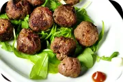
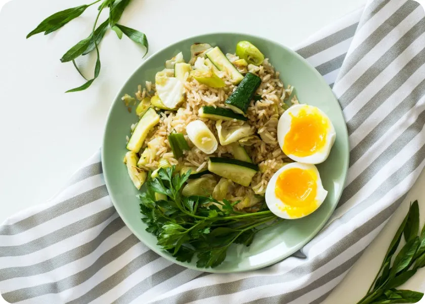

Health Japanese Fried Rice
Classic Asian cuisine in a healthy setting! We replaced plain rice with brown (or colorful) cabbage, added maximum fresh vegetables, ginger and a minimum of butter. The perfect balance of complex carbohydrates and a vibrant flavor without weight in your stomach.
35 min
Easy
4 portions
Nutrition per serving
| Calories | 320 kcal |
| Total Fat | 7 g |
| Protein | 12 g |
| Carbohydrate | 52 g |
| Fiber | 4 g |
Legendary Asian street food in fitness format. A crumbly brown rice, roasted on the stew with ginger, garlic, egg and juicy vegetables. Nutritious, healthy and weightless in the stomach. A perfect balance of BJU for your form.
Ingredients
For main dish
- 2–3 cups of leftover boiled rice (preferably brown or short-grain)
- Eggs — 2
- Summer squash or zucchini (cut into sticks or half-moons) — 1 (small)
- Leek (or thick green onion, sliced into rounds) — 1/2 stalk
- Young cabbage (coarsely shredded) — 100–150 g
- For serving: fresh parsley or cilantro.
For the sauce
- Vegetable oil (for frying ideally sesame or coconut oil for aroma) — 2 tablespoons
- Soy sauce — 2–3 tablespoons
Step-by-step preparation
01. Boil the eggs
Place the eggs in boiling water and cook for exactly 5–6 minutes so the yolk remains runny (soft-boiled eggs). Then transfer them to ice water, carefully peel, and cut in half before serving.
02. Prepare the vegetables
Cut the zucchini into medium-sized batons, the cabbage into squares or wide strips, and the leek into large rings.
03. Sauté the vegetables
Heat the oil in a deep frying pan or wok over high heat. First, add the leek and zucchini and sauté for 2–3 minutes until lightly golden. Then, add the cabbage and cook for another 2 minutes so it wilts slightly but remains crisp.
04. Combine with the rice.
Add the cooked, cold rice to the pan with the vegetables. Mix thoroughly, breaking up any clumps. Sauté everything together for another 2–3 minutes so the rice heats through and absorbs the flavors of the vegetables.
05. Dress with the sauce
Pour the soy sauce around the edges of the pan and quickly stir the rice. Taste it; if necessary, add a little black pepper or a pinch of salt (keep in mind that soy sauce is already salty).
06. presentation of the meal
Transfer the hot vegetable rice to a plate, place two soft-boiled egg halves alongside, and garnish the dish with a generous sprig of fresh parsley.
Deliciousness to your inbox
Join our gourmet club. Leave your mail today and receive a free gift of "10 dinners in 20 minutes" with your first letter!
You may like these recipe too
-

Mixed Tropical Fruit Salad with Superfood Boosts
25 min
Healthy
-

Big and Juicy Wagyu Beef Cheeseburger
25 min
Western
-

Healthy Japanese Fried Rice with Asparagus
25 min
Healthy
-

Cauliflower Walnut Vegetarian Taco Meat
25 min
Eastern